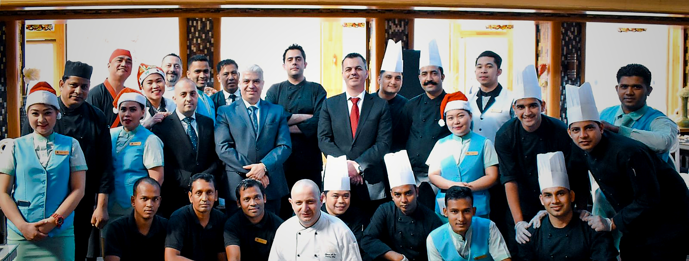

Luxury Hotels & Resorts
Executive kitchen leadership across premium hospitality environments where guest expectation, service precision, and operational consistency are central to the brand experience.
Executive Chef & Culinary Consultant
With more than twenty-five years of experience across luxury hotels, resorts, restaurant concepts, and hospitality consulting, Michel Karam brings together culinary leadership, operational discipline, and a refined understanding of premium guest experience.


The Chef
Michel Karam is an Executive Chef and Culinary Consultant whose career has been shaped by high-level hospitality environments where quality, discipline, and consistency are expected at every service. From luxury hotels and resorts to flagship dining concepts and diplomatic institutions, his work reflects a balance of culinary refinement and operational control.
Since beginning his professional journey in 2000, he has led kitchens across Lebanon, Bahrain, Qatar, Saudi Arabia, Iraq, Malaysia, and the wider region, taking on roles that span executive kitchen leadership, pre-openings, concept development, menu engineering, and large-scale back-of-house management.
Today, Michel continues to work with hospitality brands, investors, and restaurant operators seeking stronger culinary identity, clearer operational systems, and a level of execution that supports both guest experience and long-term performance.
Refined hospitality through disciplined execution
Culinary Philosophy
Michel’s philosophy begins with respect for ingredients, technique, and the craft itself, but it is sustained through structure, teamwork, and clear standards. Creativity matters, but it delivers its best work when supported by strong systems and thoughtful leadership.
His approach is rooted in the belief that excellence in cuisine is never only about the plate. It is about the way a kitchen communicates, the way a brigade is trained, and the way service holds its standard under pressure.
This balance between culinary expression and operational discipline defines his work: kitchens that perform with calm, clarity, and consistency while delivering an experience that feels polished, memorable, and credible at every level.
“
True culinary excellence is not only created in taste, but in the discipline behind it.

Selected Experience
Michel’s background spans luxury hotels, resorts, restaurant groups, diplomatic institutions, and high-volume culinary operations, with experience shaped across both established brands and pre-opening projects.
Executive kitchen leadership across premium hospitality environments where guest expectation, service precision, and operational consistency are central to the brand experience.
Extensive experience in launching concepts, structuring kitchen operations, managing brigades, and leading back-of-house performance across complex, multi-venue environments.
A consulting approach shaped by menu direction, kitchen workflow design, cost awareness, team development, and the creation of systems that support long-term quality and profitability.

Consulting Identity
Michel Karam works with hospitality concepts that are looking for more than attractive presentation. They are looking for stronger systems, clearer menu direction, better team performance, and a culinary identity that reflects the level of the brand.
Whether the focus is concept development, menu engineering, workflow refinement, team training, or broader operational restructuring, his role is to build kitchens that perform with professionalism, consistency, and long-term sustainability.
For executive chef opportunities, culinary consulting, collaborations, and hospitality development projects.
Send Message